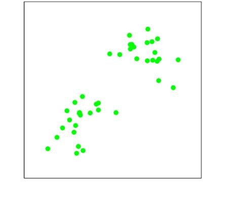
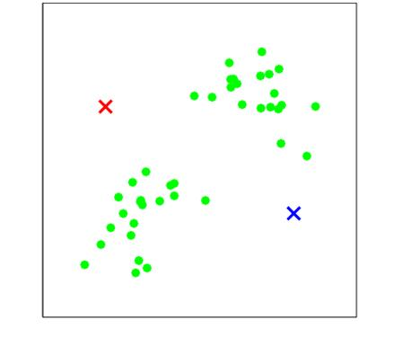
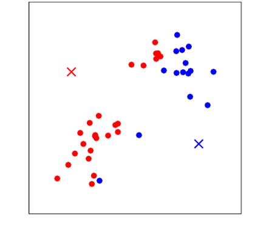
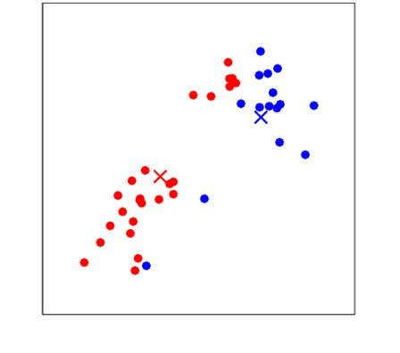
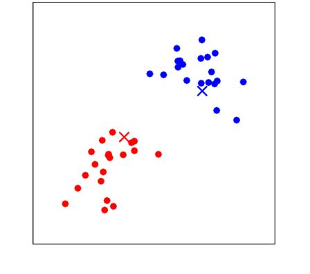
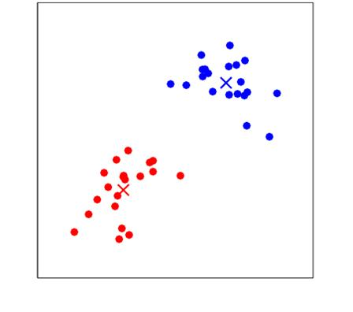

Lecture 9: Clustering, K-Means and Gaussian Mixtures
Video blocked (ad-blocker or local file mode).
Watch on YouTubeVideo not loading? Watch on YouTube
Original lecture. Chris Ré introduces unsupervised learning with k-means and sets up Gaussian mixture models.
How to read this lesson
This lesson has two levels. Level 1 (Core) contains what you need to understand everything that follows in CS229 and the courses that build on it. Level 2 (Deep) contains what you need for correct, interview-grade understanding. Read Level 1 straight through. Return to Level 2 when you want depth.
No prerequisites are assumed. Every term is defined at first use. This is the unsupervised block: no labels anywhere. Supervised concepts from lectures 2 through 8 are reused, not re-explained.
Level 1: The unsupervised question
No labels. The data is x only. The question changes from “predict y” to “what structure is hiding here?” The lecture’s pedagogical goal is that question itself: what are we modeling, what structure do we assume, what do we pull out? The algorithms take five minutes to look up. The judgment takes the lecture.
Clustering is the canonical unsupervised task: split points into groups so that similar points share a group. Two algorithms, one intuition. K-means is ad hoc but obvious. Gaussian mixture models (GMMs) are the probabilistic, softer version 01:34 ⏱01:34. The EM algorithm that fits GMMs is lecture 10. This lecture builds the intuition.
Unsupervised methods had a renaissance in the last ten years. The motivation in the lecture is concrete: photons hitting a plate 30:43 ⏱30:43. You count photon arrivals and must infer how many sources there are and where they sit. No one labels the photons. The structure, sources plus noise, must be hypothesized.
Labels. Supervised training pairs (x, y) tell the algorithm what the right answer is. Unsupervised data is x only, so the algorithm must propose its own structure: clusters, directions, densities. Evaluation is also harder: without labels there is no single score, which is why the lecture stresses the modeling questions over the algorithms. When you suspect discrete hidden structure and want it made explicit: customer segments, cell types, photon sources. If you only need the structure as features for a later supervised task, softer representations often beat hard cluster assignments. Know what you will do with the clusters before you compute them.
Level 1: K-means
Pick k. Initialize k centers mu_1..mu_k randomly 08:45 ⏱08:45. Then repeat two steps. Assign each point to its nearest center. Move each center to the mean of its assigned points. Stop when assignments stop changing.




The distortion is the sum of squared distances from points to their centers 31:33 ⏱31:33. Each step lowers it or leaves it unchanged, so the algorithm converges 17:49 ⏱17:49. Converges to what? A local minimum. Different random starts give different answers. The deterministic steps hide one random choice at the top: the initialization. That choice decides which minimum you land in.
The key unsupervised insight: cluster labels are meaningless 03:24 ⏱03:24. The professor states that cluster identity is unknown: which cluster is mu 1 or mu 2 is unknowable, because there are no labels. Swapping all labels changes nothing. What matters is where the centers ended up, not what they are called.


Each of the two steps minimizes the distortion with the other fixed: assignment picks the nearest center, and the mean minimizes squared distance to assigned points. Distortion never increases, and there are finitely many assignments, so it must stabilize. It stabilizes at a local minimum, not necessarily the global one. Restarts with different seeds explore different minima. The elbow method: plot distortion against k and stop where the curve bends 01:15 ⏱01:15. More clusters always fit better, so the curve always falls. The elbow is where extra clusters stop buying much. It is a heuristic, not a theorem. Domain knowledge beats the elbow when you have it.
Level 1: K-means++
Random initialization is the weak point. K-means++ fixes the start 18:57 ⏱18:57. Pick the first center uniformly at random. Pick each next center with probability proportional to its squared distance from the nearest existing center. Far-flung points become likely seeds. Centers spread out instead of piling up.
The result is a theorem, not a trick: k-means++ guarantees an approximation ratio 19:03 ⏱19:03, a bound on how far the final distortion can be from optimal. The optimal clustering is NP-hard, so no efficient method guarantees perfection. A provable ratio is the best possible kind of promise. It is the default in sklearn, written by Stanford graduate students.
It seeds centers far apart instead of uniformly at random. Each new center is sampled with probability proportional to squared distance from the closest existing center. This spreads seeds across the data’s extent and comes with a provable approximation ratio. In practice: better minima, fewer restarts. It tells you to stop looking for the perfect algorithm. NP-hard means no efficient method finds the global optimum in general. The field therefore competes on approximation guarantees and practical behavior. K-means++ is the canonical example: provably good seeding plus a local optimizer.
Level 1: GMMs, the soft version
K-means assigns each point to exactly one cluster. A Gaussian mixture model softens that: each cluster is a Gaussian with its own mean, covariance, and mixing weight, and each point belongs to every cluster partially. The partial memberships are responsibilities: the probability each cluster generated the point.

Hard assignments are a limiting case of soft ones. Let the Gaussians get narrow and the responsibilities collapse to 0 or 1: you recover k-means. GMMs also model cluster shape through covariances, where k-means only knows spherical distance to a center.
Fitting a GMM means maximizing the likelihood over means, covariances, and weights. The likelihood has a sum inside the log that resists closed-form attack. The weapon is the EM algorithm: guess the soft assignments, then fit the Gaussians to the weighted points, then repeat. Lecture 10 derives it. The photon plate is the running example: each photon partially belongs to each candidate source.

K-means for speed and simplicity: spherical clusters, hard assignments, one distance computation per point per center. GMM for shape and uncertainty: elliptical clusters, soft responsibilities, a real likelihood you can compare across models. If clusters overlap or have different shapes, k-means’ hard spherical assumption visibly fails and GMM earns its cost. The prior probability of each cluster: what fraction of the data each Gaussian generates. They must sum to one. A tiny weight means a rare cluster the model keeps around because some points need explaining. Weights near zero suggest you picked k too large.
Level 2: What the distortion leaves out
Distortion measures compactness, not correctness. A clustering can have low distortion and miss the real structure: elongated clusters get chopped, overlapping ones get merged. K-means assumes spherical clusters of similar size because Euclidean distance to a center is its only notion of belonging. When the assumption fails, the algorithm fails confidently.
There is also the scaling trap. Features on different scales distort Euclidean distance: the lecture 10 rescaling discussion applies here too. Standardize features before clustering, or the large-scale feature decides every assignment. K-means has no built-in sense of units.
Level 2: EM as the general pattern
Step back. K-means alternates: assign points given centers, move centers given assignments. EM will alternate: estimate hidden assignments given parameters (E-step), maximize parameters given assignments (M-step). K-means is the hard, zero-temperature limit of EM on a GMM. Learn to see the alternating pattern and lecture 10 is a derivation, not a new idea. The pattern recurs anywhere hidden variables meet maximum likelihood.
Recap: the whole lesson on one screen
Eight ideas carry this lecture. Read each card. Say the core sentence out loud. If you can, you own the lesson.
No labels. The questions are what to model and what structure to assume. Photon plate: infer sources from arrival counts.
Key: structure, not prediction
Random centers. Assign each point to nearest. Move centers to means. Repeat until assignments freeze.
Key: two steps, alternating
Sum of squared distances to centers. Each step lowers it. Converges to a local minimum, not the global one.
Key: monotone, local
Random starts land in different minima. Labels are meaningless: only center positions matter. Restart and compare by distortion.
Key: labels permute freely
Sample new centers proportional to squared distance from existing ones. Provable approximation ratio. The sklearn default.
Key: spread seeds, bound the cost
Plot distortion vs k. Stop at the bend. Heuristic, not theorem. More clusters always fit better.
Key: diminishing returns
Each cluster a Gaussian with own covariance. Responsibilities split points across clusters. K-means is the hard limit.
Key: partial membership
Assign given parameters, fit given assignments. EM generalizes it. See the pattern and lecture 10 is a derivation.
Key: alternate until stable
Official sources and further reading
Official: - Lecture 9 video: softer clustering 01:34 ⏱01:34, elbow 01:15 ⏱01:15, no labels 03:24 ⏱03:24, random init 08:45 ⏱08:45, k-means++ 18:57 ⏱18:57, photon plate 30:43 ⏱30:43. - CS229 Spring 2026 official course notes: clustering chapter; the k-means figures above are from it.
Further reading: - Arthur and Vassilvitskii (2007), “k-means++: The Advantages of Careful Seeding”: the seeding paper. - MacQueen (1967): the original k-means paper, for historical flavor.
Caveats from these sources. The elbow is a heuristic with no guarantee; automated elbow-finders disagree. K-means++ bounds the expected cost, not the worst case. The photon example is illustrative; real source-separation problems add backgrounds the lecture omits.
Connections to the other courses
- CS336: vector quantization for efficient inference clusters activations; k-means is the algorithm.
- CS224N: word-sense clusters and topic models are clustering over text representations.
- CS329H: mixture models are the simplest latent-variable decision models; EM is the inference pattern.
Clustering cheatsheet. Unsupervised: x only, find structure. K-means: random centers, assign nearest, means of assigned, repeat; distortion = sum squared distances, monotone decreasing, local minima; labels meaningless; elbow picks k. K-means++: seed proportional to squared distance; approximation ratio; sklearn default. GMM: Gaussians with own covariances and weights; soft responsibilities; k-means is its hard limit. Pattern: alternate assignment and fitting.
Labels are a luxury. Without them, every answer is a hypothesis about structure. State the hypothesis before running the algorithm. K-means assumes spheres. If your clusters are bananas, say so first.
Sources
- VIDEOLecture 9 video, Stanford Online YouTube
- NOTESOfficial subtitle transcript (en-US)
- NOTESCS229 Spring 2026 official course notes (local PDF)